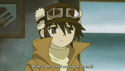

| Name | Description | Year | |
|---|---|---|---|
| Legend of the galactic heroes |
A classic SpaceOpera, where 2 major empires fight between them with their own beliefs and ideals. In the imperial side "Reinhard Von Lohengram" a military genius and somehow different to make the change on the core of the corrupt noble elite on the other side in the free Planets coalition is Wen-Li, who joined the military to be an historian, this makes him a well known tactician men with an variety of knowledge in past military tactics, very driven and heroic person which makes his own rights to come to an end, essentially fighting against an corrupted democracy of his country government. The clash of the two main chars is addicted and somehow engaging seeing how two different hero's with different ideals, "power vs will", comes always to the same goal the best for their people. |
1989 | |
|  | Kino no Tabi |
Inspired by the ultimate selfless act of a friendly traveler, calm quiet introspective teenage marksman Kino travels around the world on her talking motorcycle and best friend Hermes, visiting different countries, that are all basically city-states. The duo has no particular goal in mind other than to learn about life, the world in general and themselves. They have only one rule - never stay in one place for more than three days. Some of the places they visit turn out to be beautiful, others disturbing. Many of the places have their own culture, social order and philosophy of living, so during her endless journey, Kino witnesses the darkest sides of humanity, but also occasional triumphs and many peculiar oddities. She sometimes protects, kills, saves, ignores or helps people, but also on occasion thinks about her past, questions her whole reality once and even becomes tempted to stay at one place for longer than three days at one point. | 2004 |